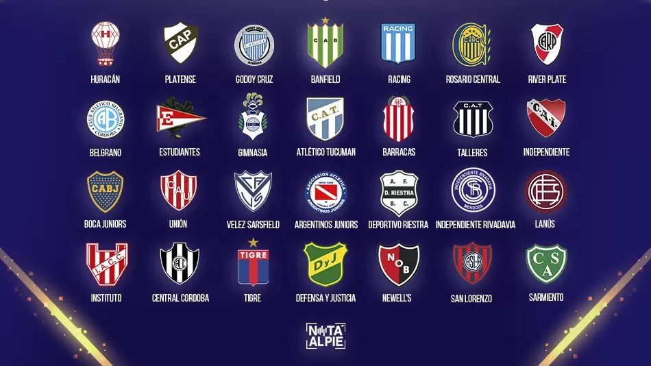
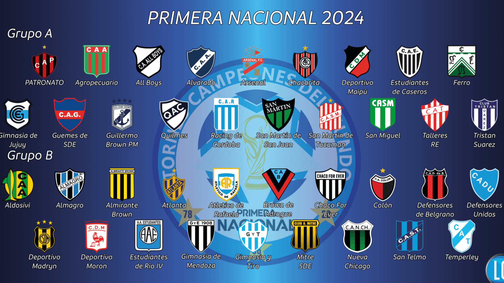
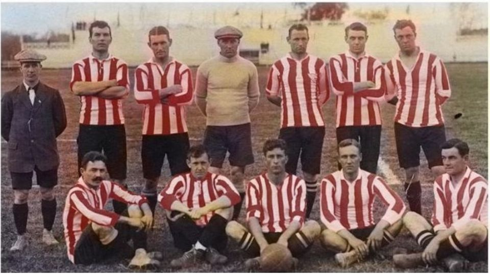

Inicio
Clubes
Institucional
Estadísticas
Contacto
CLUBES
Todo sobre los orígenes de los más de 300 clubes que forman o formaron parte de la historia del fútbol argentino

Primera División
Son 28 los equipos que conforman la máxima categoría

Ascenso
Son cuatro las principales divisiones en el país

Desafiliados
Desde Alumni hasta el Mandiyú de Diego Maradona